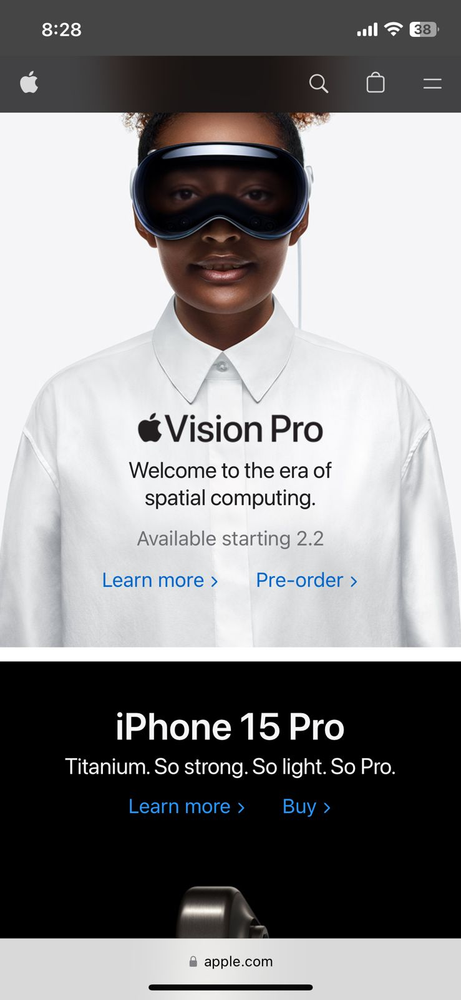
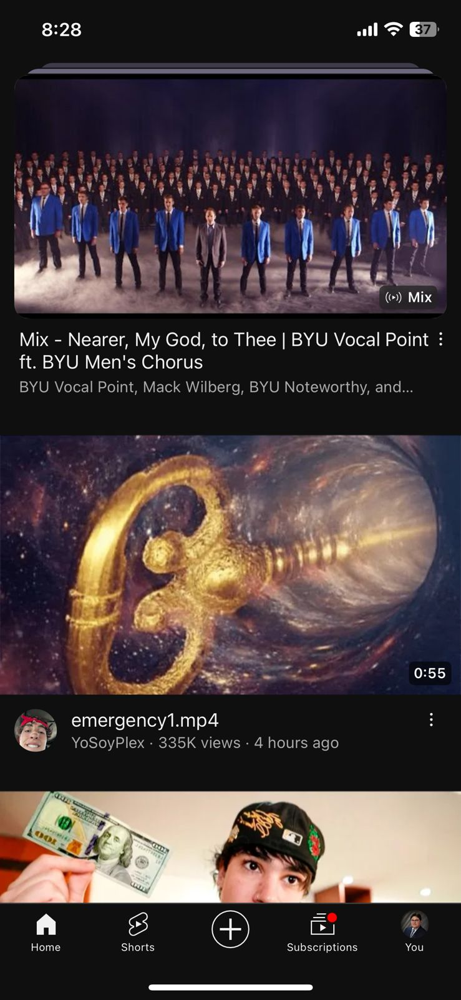

Visual Hierarchy
Apple
Apple's website effectively uses visual hierarchy to emphasize key elements such as products, headlines, and call-to-action buttons. Larger fonts, bold visuals, and strategic placement guide the user's attention.
Fitt's Law
YouTube
YouTube follows Fitt's Law by placing the video player controls prominently, ensuring that users can easily interact with playback features. Buttons like play, pause, and volume control are designed for easy clicking.
Hick's Law
Netflix
Netflix adheres to Hick's Law by presenting a simple and straightforward interface. The homepage offers users a limited number of options, reducing decision time and facilitating quick content selection.